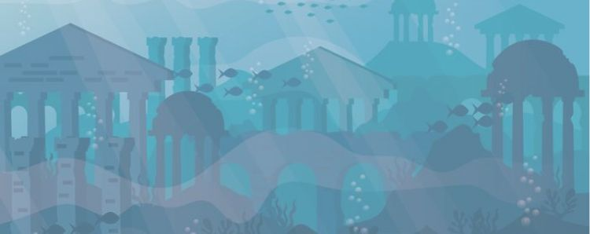
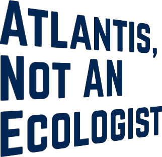
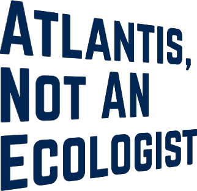

Aquaman, un roi pollueur
Entre capacités surhumaines et pouvoirs océaniques, découvrez qu’Aquaman, le roi d’Atlantis, n’est pas un héros face à l’environnement
Lire la suite
Super-héros de l’univers DC comics, Aquaman accomplit des prouesses extraordinaires, mais n’agit pas si bien face à l’environnement. Roi des Atlantes, ces habitants amphibiens sont la cause de nombreux déchets dans les profondeurs marines. Une situation peu exemplaire.
Découvrez à l’aide mon site que derrière cette fiction se cache un réel problème écologique. ainsi que trouver des solutions adaptées pour vous. Avec 'Atlantis, Not An Ecologist', vous pouvez sauver la planète même sans super-
Entre capacités surhumaines et pouvoirs océaniques, découvrez qu’Aquaman, le roi d’Atlantis, n’est pas un héros face à l’environnement
Lire la suiteLes quantités de déchets marins sont astronomiques. Apercevez comment l’homme a fait des océans, une poubelle géante.
Lire la suitePour garantir un avenir à nos océans, découvrez des solutions technologiques mais aussi des solutions adaptes à votre vie quotidienne
Lire la suite 
